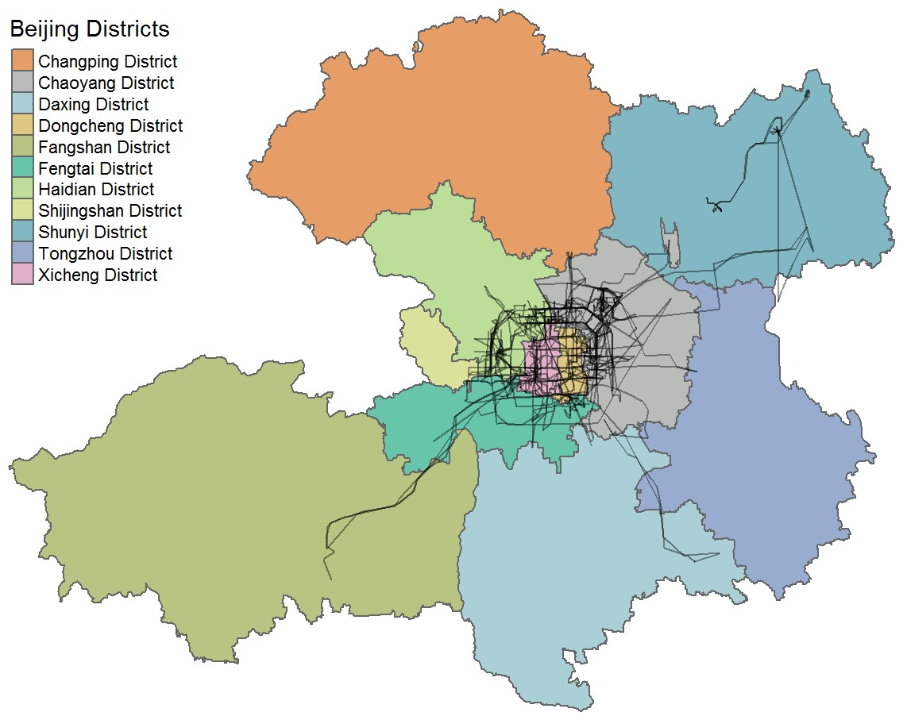
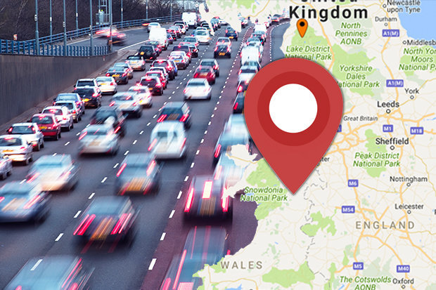
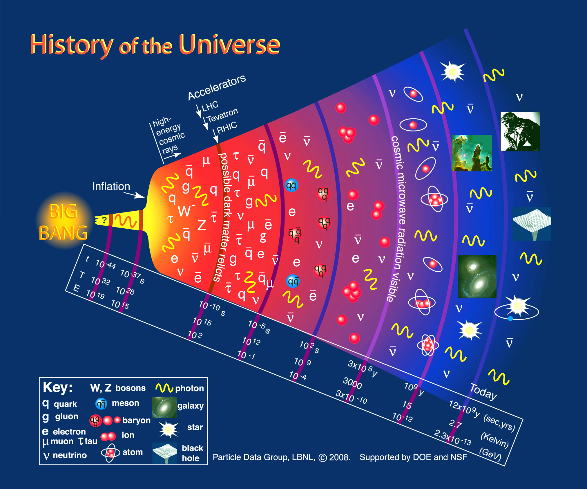

About Me
The picture above is a compelling metaphor for what one of my main aspirations in life is: enjoy a clear view from a vantage point. Such clear views require effort to be conquered, and my aspiration is to enjoy the clearest possible.
To pursue this goal, I studied cosmology for 9 years, starting from a Master course at Imperial College and ending with 4.5 years as a postdoctoral resarcher at the University of Basel. Now, I am based in Brussels and work as a Data Scientist consultant. My inquisitive nature leads me to machine learning techniques and their uses in support of decision making. Unveiling hidden information from data requires much of the qualities that make a good researcher: curiosity, patience, knowledge, critical thinking...
Data Science is very much in vogue, and for good reasons! Advanced analytics have the potential to disrupt traditional approaches to decision making and business. And I want to be part of this! I work with R and python, arguably the best tools available for data analytics.
Projects

Taxis in Beijing
An analysis of GPS traces of taxis in Beijing, using R.

Traffic and accidents in the UK
An analysis of traffic and accidents rates in the United Kingdom.

Early Universe Cosmology lectures
Handwritten notes of a Master course on Cosmology I gave at the University of Basel in fall 2013.